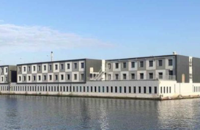
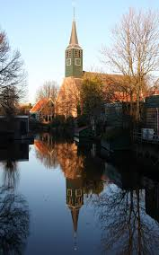

zondag 27 september
Optreden bij COA
Op zondag 27 september treden we op bij het COA in Zaandam. Het optreden begint om 15:00 uur. We zingen daar voor zo'n 500 asielzoekers afkomstig uit alle delen van de wereld. We zullen ongetwijfeld onder meer onze Refugee Blues ten gehore brengen.
Wegens ziekte van de dirigent is dit optreden helaas niet doorgegaan.

woensdag 16 december

Kerstconcert
Op 16 december geven we ons traditionele kerstconcert. Deze keer met als thema “Nostalgie”. We brengen veel nummers uit de oude doos.